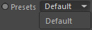
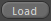
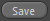
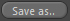
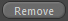

Presets
Settings to load and save presets for the Gas Renderer.
Presets are always storing the settings of the shader. They do NOT store
linked objects (i.e. excluded lights, objects for distance modes) to keep
the compatibility at an optimum and to maintain setup independency.
Presets

Holds a list of settings presets for the Gas Renderer.
If you want to load a preset, select it here in the list and then click the Load button.
Load

Loads the settings preset that is selected in the Presets drop down.
Save

Saves the current settings and overwrites the last loaded preset in the Presets drop down.
Save as..

Saves the current settings in a new preset file. The resulting preset will appear in the Presets Drop down once it has been saved.
Remove

Removes the currently selected preset in the Presets drop down.